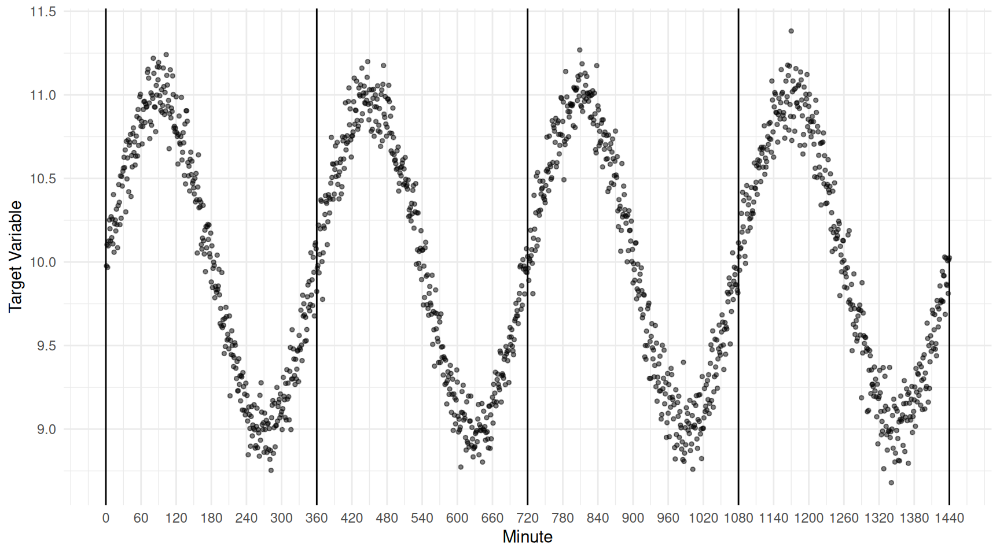
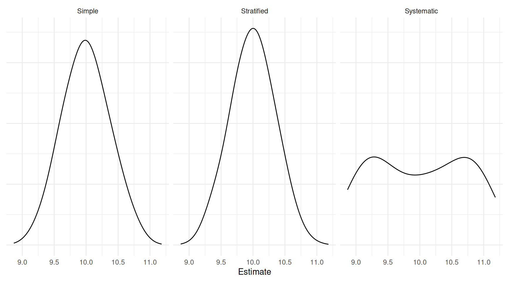
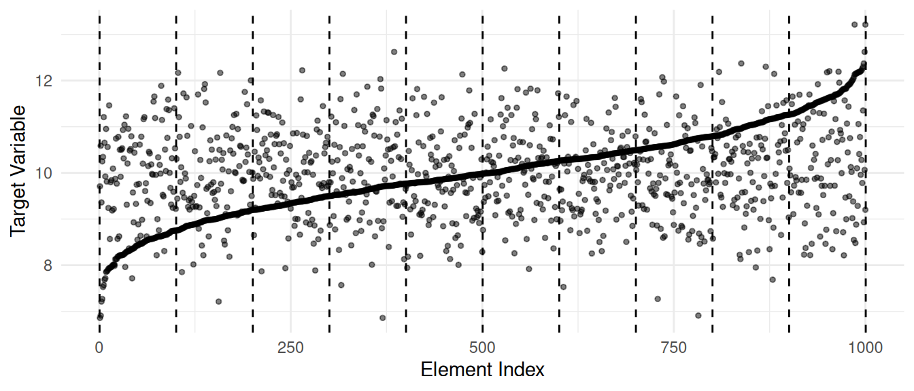
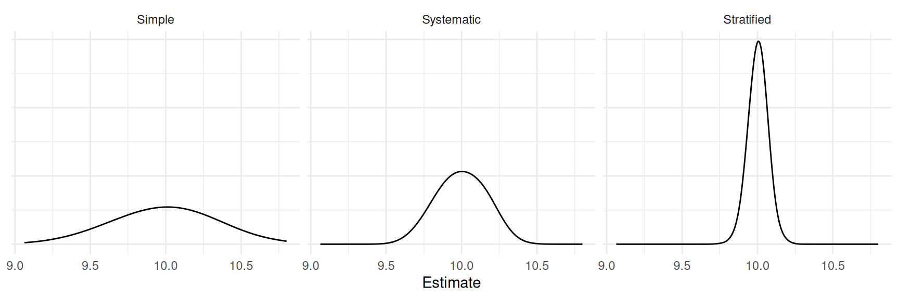
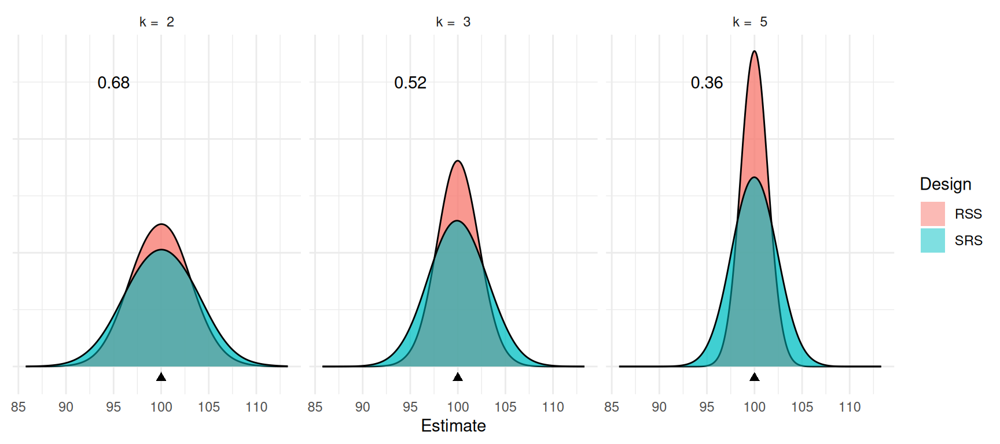
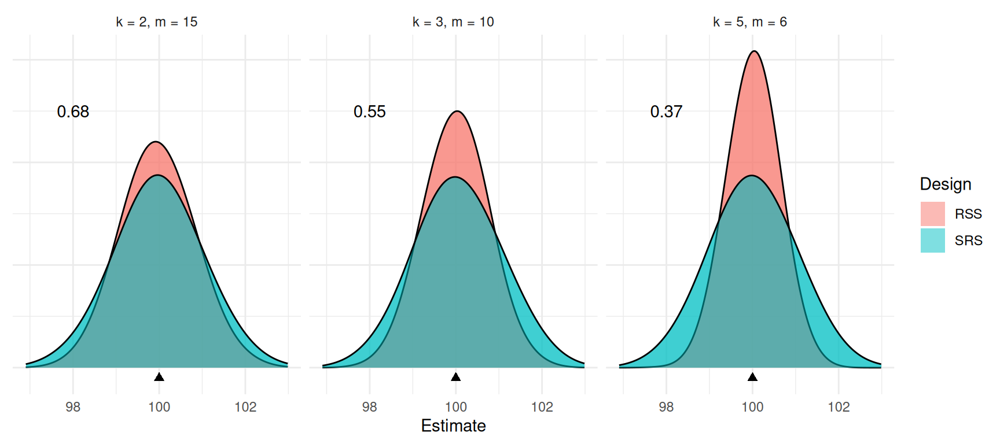
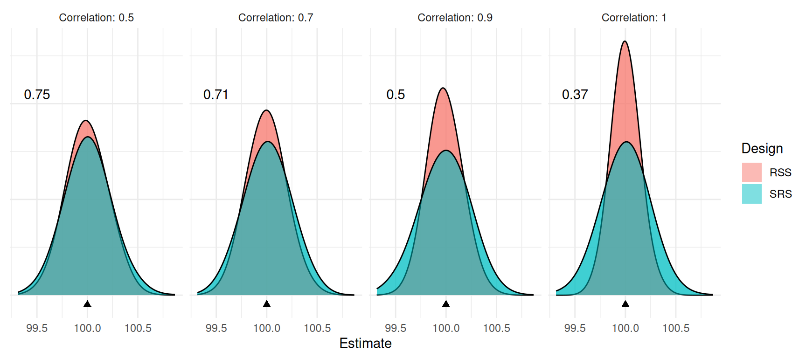

You can also download a PDF copy of this lecture.
Ordered systematic sampling with periodic target variables requires careful specification of the sampling units.
Example: This is a poorly designed 1-in-360 ordered systematic sampling design. The within-cluster variability is very low.  Consider the results of a simulation study with three designs: simple random sampling, stratified random sampling (using the 360 minute intervals as strata), and the 1-in-360 systematic sampling design. | Design | Variance | Bound |
|---|---|---|
| Simple | 0.1264822 | 0.7112866 |
| Stratified | 0.1130184 | 0.6723641 |
| Systematic | 0.5031181 | 1.4186164 |
| Design | Variance | Bound |
|---|---|---|
| Simple | 0.0617470 | 0.4969788 |
| Stratified | 0.0134147 | 0.2316438 |
| Systematic | 0.0019765 | 0.0889149 |
Recall that in cluster sampling we have \(M\) elements in \(N\) clusters. The number of clusters sampled is \(n\), and the number of elements in the \(i\)-th cluster is \(m_i\).
Example: Researchers are interested in estimating the number of otter dens along a coastline. They divided the coastline into 50 ordered sections and used a 1-in-10 ordered systematic sampling design where they randomly selected one of the first 10 sections, and then selected every 10th section after that section. In their survey they selected the 7th, 17th, 27th, 37th, and 47th sections. For this design what is the number of elements in the population (\(M\)), the number of clusters in the population (\(N\)), the number of clusters sampled (\(n\)), and the number of elements per cluster (\(m_i\), which is the same for each cluster in this design)?
What if they then selected one of the remaining 9 initial sections, selecting the 2nd, so that they then also selected the 12th, 22nd, 32nd, and 42nd sections. What changes?
In cluster sampling, the variance of an estimator cannot be estimated based on one sampled cluster (see the formulas for the estimated variance of the estimators to see why). So a single 1-in-k set of elements or a single grid of elements is not sufficient to estimate the variance of an estimator. There are several solutions.
Treat the elements in a cluster as a simple random sample.
Use repeated systematic sampling.
Model-based approaches.
Repeated systematic sampling simply involves selecting multiple 1-in-\(k\) samples, each of which is a cluster. This is also a good way to simply increase the number of elements sampled.
Suppose that we could first sort the elements in increasing order with respect to the value of the target variable prior to applying systematic or stratified sampling.

| Design | Variance | Bound |
|---|---|---|
| Simple | 0.0902096 | 0.6006984 |
| Systematic | 0.0207394 | 0.2880234 |
| Stratified | 0.0033926 | 0.1164917 |
A basic ranked set sampling design (with one cycle) can be described as follows.
Select \(k\) sets of \(k\) elements using simple random sampling.
Sort the elements within each set with respect to the target variable using an auxiliary variable that is thought to be correlated with the target variable.
In the first set, observe the target variable for the element ranked first. In the second set, observe the target variable for the element ranked second. And so on until you have observed the target variable for \(k\) elements.
Let \(y_{(i)j}\) denote the value of the target variable for the element ranked \(i\)-th in the \(j\)-th set. That is, we assume that \[ y_{(1)j} \ge y_{(2)j} \ge \cdots \ge y_{(k)j}, \] or \[ y_{(1)j} \le y_{(2)j} \le \cdots \le y_{(k)j}, \] for all \(k\) sets (direction of ranking doesn’t matter provided it is the same for all sets).
| Rank | 1 | 2 | 3 | \(\cdots\) | \(k\) |
|---|---|---|---|---|---|
| 1 | \(\boxed{y_{(1)1}}\) | \(y_{(1)2}\) | \(y_{(1)3}\) | \(\cdots\) | \(y_{(1)k}\) |
| 2 | \(y_{(2)1}\) | \(\boxed{y_{(2)2}}\) | \(y_{(2)3}\) | \(\cdots\) | \(y_{(2)k}\) |
| 3 | \(y_{(3)1}\) | \(y_{(3)2}\) | \(\boxed{y_{(3)3}}\) | \(\cdots\) | \(y_{(3)k}\) |
| \(\vdots\) | \(\vdots\) | \(\vdots\) | \(\vdots\) | \(\ddots\) | \(\vdots\) |
| k | \(y_{(k)1}\) | \(y_{(k)2}\) | \(y_{(k)3}\) | \(\cdots\) | \(\boxed{y_{(k)k}}\) |
| \(\boxed{y_{(1)1}}\) | \(\boxed{y_{(2)2}}\) | \(\boxed{y_{(3)3}}\) | \(\cdots\) | \(\boxed{y_{(k)k}}\) |
Example: Consider a ranked set sampling design with \(k\) = 3. Suppose the first set of observations of the target variable would be 1.2, 0.9, and 1.3, the second set would be 0.8, 1.1, and 0.2, and the third set would be 1.9, 0.1, and 1.4. Assuming perfect ranking with respect to the target variable, what would be our sample of observations?
Examples of applications of ranked set sampling.| Element | Target Variable | Ranking Method |
|---|---|---|
| quadrat | forage | visual inspection |
| tree | dry bark weight | estimated volume |
| gasoline sample | laboratory RVP | field RVP |
| household | income (long form) | income (short form) |
| newborn baby | bilirubin level | visual inspection |
SRS requires selection and observation of \(n\) elements, while RSS requires selection and ranking of \(n^2\) elements, and then the observation of \(n\) elements.
The sample mean \(\bar{y}\) is an unbiased estimator of \(\mu\) for both designs.
The design effect of RSS has the property that \[ \frac{2}{k+1} \le \frac{V_{\small \text{RSS}}(\bar{y})}{V_{\small \text{SRS}}(\bar{y})} \le 1, \] and tends to be closer to \(2/(k+1)\), particularly in cases where the population distribution is nearly symmetric.
Given that RSS is more expensive, when would it be preferred to SRS? Why would it be preferred to stratified or systematic sampling?

Note: The number shown in each graph is the design effect of the ranked set sampling design.
To increase the sample size, we could increase the number of sets \(k\), or increase the number of cycles (\(m\)). The total sample size is then \(n\) = \(km\).
Example: Consider a ranked set sampling design with \(k\) = 3 sets and \(m\) = 2 cycles. Suppose that for the first cycle the first set of observations of the target variable would be 1.2, 0.9, and 1.3, the second set would be 0.8, 1.1, and 0.2, and the third set would be 1.9, 0.1, and 1.4. And for the second cycle the first set of observations of the target variable would be 1.0, 1.2, and 1.8, the second set would be 1.7, 0.7, and 1.0, and the third set would be 2.0, 1.1, and 1.2. Assuming perfect ranking with respect to the target variable, what would be our sample of observations?
Consider the design effects of three combinations of \(k\) and \(m\) that all yield a sample size of \(km\) = 30.
 For perfect rankings it would be best to have a larger set size (\(k\)) rather than a larger number of cycles (\(m\)). But this may not be a good idea in practice. Why?
Suppose that ranking is based on an auxiliary variable that is correlated with the target variable.
